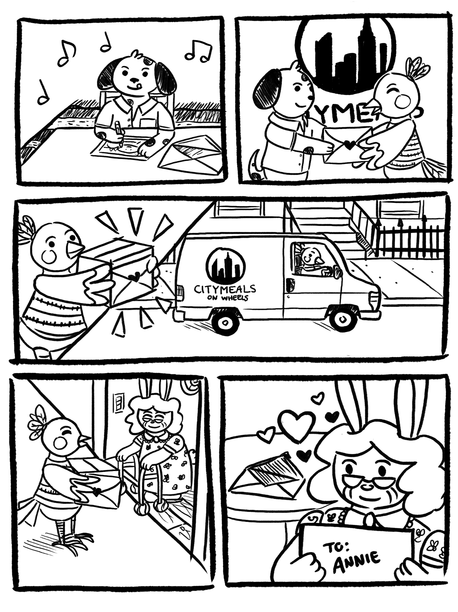

Pro bono
Selected volunteer work · 2017 – present
Using my skills to show up for causes I care about. 💕
Rose City Pride Bands
Design, illustration, and community organizing for Portland’s own Rose City Pride Bands, an organization dedicated to creating a welcoming space for the LGBTQ+ community to make music together.


Good Call
Spot illustrations for the initial launch of Good Call, an arrest support hotline providing free legal support 24/7 in NYC.
Personal initiatives
Dad hat ACLU Foundation fundraiser
Created a silly "in dog we trust" dad hat that raised hundreds to support a serious goal.
Hunger and nutrition awareness
Food is life!

Illustration to raise awareness for Feeding America's Hunger Action Month, every Sep
During my tenure at Mastercard, I organized an internal handmade greeting card workshop for my colleagues benefitting Citymeals on Wheels.

Handbill I designed and illustrated to encourage attendance